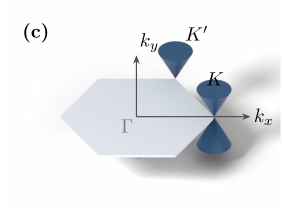

Advanced Quantum Materials 2027 · All lectures · Lecture notes
Session 2. Symmetries, Tight-Binding Band Structure Theory, and Effective Models
2.12 Measuring band structures with ARPES
Once we have all this formalism, a natural question is whether any of it can be observed. The energy eigenvalue \(E(\mathbf{k})\) is clearly physical, but the quasi-momentum \(\mathbf{k}\) itself was introduced as a symmetry eigenvalue in Section 2.6. So we ask whether we can measure it directly, and whether we can measure the relation between the two.
The answer is yes, with angle-resolved photoemission spectroscopy (ARPES). The idea is simple in principle. We send photons of known energy and momentum onto a material, and each photon can remove an electron from the material completely, which is the photoelectric effect. Conservation of momentum and energy relates the momentum and kinetic energy of the electron, which are both measured directly outside the material, to its momentum and energy when it was still inside. So when we scan the emission angle and the kinetic energy of the emitted electrons, we map \(E(\mathbf{k})\) directly. This is how the band structure and the Fermi surface of graphene are measured in practice, and the measured Dirac cone agrees well with the tight-binding derivation of Section 2.11. This material is only on the slides and has no counterpart in the notebook. The actual ARPES images of the measured band structure and Fermi surface of graphene are shown on the slides, and there is no way to reproduce a real photoemission experiment in a tight-binding notebook. The description above gives the physical principle, but to see the measured data itself one needs the figure.

In ARPES we measure the kinetic energy and the emission angle of the electrons that leave the material. What do we obtain from them?
Show the answers
- A. ✓ True
This is true. Conservation of energy and of the momentum along the surface relates the measured values to the ones inside. Scanning the angle and the energy then maps the band structure directly.
- B. ✗ False
This is false. The angle is not averaged out. For electrons of \(20\) eV, an angle of \(10^\circ\) gives \(k_\parallel\approx 4.0\ \text{nm}^{-1}\) and \(20^\circ\) gives \(7.8\ \text{nm}^{-1}\), so each angle is a different momentum.
- C. ✗ False
This is false. For the chain \(\epsilon=-2t\cos(ka)\) the electrons seen at \(k=0\) have energy \(-2t\), and at \(ka=\pi/2\) they have \(0\). The energy depends on the angle, so we get the momentum too.
The angle gives the momentum along the surface, and the energy gives the band.
2.13 Closing summary
Symmetry as a tool to simplify. When the ground state shares the symmetry of the Hamiltonian, we can use a symmetry operator that commutes with it, \([H,S]=0\) in (2.3), and find the eigenbasis of \(H\) by finding the eigenbasis of \(S\) instead. We worked this out explicitly for rings of three and five sites in Section 2.4.
Bloch’s theorem is this same idea applied to translational symmetry on an infinite lattice. Eigenstates have a definite phase \(\varphi\) under translation, which is the quasi-momentum of (2.10), and this turns one infinite-dimensional diagonalization into a continuous family of finite ones, given by the Bloch Hamiltonian \(H(\varphi)\).
We derived the band structure of the one-dimensional chain explicitly, \(\epsilon_\varphi=-2t\cos\varphi\) in (2.8). We generalized the same method to second-neighbour hopping (2.9), to several orbitals per unit cell with the matrix Bloch Hamiltonian \(H(\varphi)=t+\gamma e^{i\varphi}+\gamma^\dagger e^{-i\varphi}\) in (2.12)-(2.13), and to higher spatial dimensions, (2.14) and (2.15).
A dispersion \(E(\mathbf{k})\) directly determines the measurable properties of a material, which are the density of states (2.16), the group velocity (2.17), the effective mass (2.18) and the Fermi surface. Every real dispersion is built locally from three types, which are parabolic, Dirac and flat.
The Dirac cone of the honeycomb lattice of graphene, \(H(\mathbf{q})\approx\hbar v_F(q_x\sigma_x+ q_y\sigma_y)\) with \(E_\pm=\pm\hbar v_F|\mathbf{q}|\) in (2.20)-(2.21), is the most important example of this session. We derived it directly from the vanishing of the off-diagonal Bloch Hamiltonian (2.19) at the points \(K,K'\). The Lieb and kagome lattices realize flat bands with the same kind of interference in real space, and with no fine-tuning.
All of this band-structure method generalizes directly to phonons, magnons and Bogoliubov-de Gennes quasiparticles, and not only to electrons, and it is tested against real materials in experiments with ARPES.
The main message of this session is the following. The spectra of periodic systems are computed with band-structure theory, by choosing the common eigenbasis of the symmetry operator and the Hamiltonian, and the resulting dispersion relation \(E(\mathbf{k})\) alone determines many of the electronic properties of a material, before interactions are included again. The Dirac cone that we derived in Section 2.11 is not only a fact about graphene. It is the object that the next session takes up, where we ask what happens when it is gapped open, and this is where topological band structure, Chern numbers and the SSH model, which we already saw in the two-orbital chain of (2.13), enter the course in detail. The flat bands are also not the end of the topic. The kagome and Lieb constructions of this session lead directly to the flat bands of the Landau levels, which the quantum Hall session builds several sessions from now.
A unit cell has four orbitals. What is the size of \(H(\varphi)\), and how many bands do we get?
Show the answers
- A. ✓ True
This is true. The Bloch Hamiltonian has one row and one column for every orbital of the cell. At each \(\varphi\) it has four eigenvalues, and they form the four bands.
- B. ✗ False
This is false. A \(2\times 2\) matrix describes a cell with two orbitals, such as the chain of (2.13). With four orbitals, the rows of \(H(\varphi)\) run over four orbitals.
- C. ✗ False
This is false. Take the uniform chain with a cell of four sites. At \(\varphi=0\) the four eigenvalues are \(-2t\), \(0\), \(0\) and \(2t\), so there are four bands and not one.
The size of the Bloch Hamiltonian is the number of orbitals in the cell.